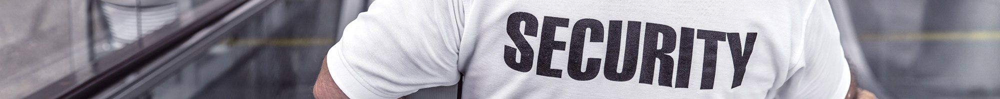
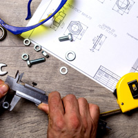
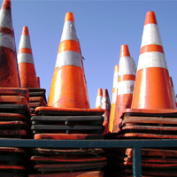
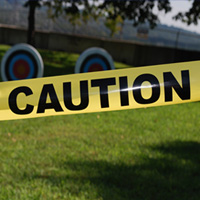
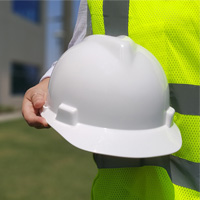

> ESG경영 > 안전경영
안전경영
경영의 제1원칙
삼성중공업은 안전경영을 고유문화로 정착시키기 위해 전사적 차원에서 노력하고 있습니다.
운영방침
- 안전이 경영의 제1원칙이다
- 중대재해 환경오염 ZERO
-
안전관리
패러다임 전환 -
고객만족도
향상 -
녹색 사업장
구축
배경
수많은 설비와 자재가 투입되는 선박 건조와 해양설비 제작 과정에는 사고의 위험이 항상 존재합니다. 심각한 인적·물적 손해를 유발하는 산업재해는 회사의 손실뿐만 아니라 개인과 가정의 손실로 이어질 수 있습니다.
접근방법
안전한 작업장에서 완벽한 품질과 높은 생산성이 발현된다는 확신 아래 모든 작업공정에서 안전을 최우선 가치로 설정하고 있습니다. 안전은 아무리 강조해도 지나치지 않은‘절대 가치’입니다.
추진방향
삼성중공업은 안전경영을 고유문화로 정착시키기 위해 전사적 차원에서 노력하고 있습니다. ‘안전인 경영의 제1 원칙이다‘ 를 방침으로 구체적인 추진 전략을 수립하고 정기적인 교육·훈련·평가를 실시하고 있습니다.

인증 및 활동
- 안전경영 인증
- 2018년 11월 업계 최초로 ISO 45001 전환 인증을 완료했으며, 2019년 4월재인증을 취득하였습니다. 인증을 통해 근로자 및 기타 이해관계자의 요구 사항을 반영해 안전보건 전략을 구축하고 있으며, 관련 성과 및 개선 조치 등을 투명하게 공개하고 있습니다. 앞으로도 지속적인 성과 개선 및 선제적 대응을 통해 인증을 유지하고, 안전한 사업장 조성을 위해 인증이 요구하는 사항 이외에도 다양한 안전보건활동을 추진할 계획입니다.
- 안전경영 활동
- 삼성중공업은 경영진을 필두로 해 사내에 안전 실천 분위기를 조성하고 있습니다. CEO가 '안전이 경영의 제1 원칙이다'라는 전사 안전경영 방침을 선언하는 등 안전 메시지를 전파했으며, 경영진과 조선소장이 함께 현장 안전 점검을 실시했습니다.
- 안전경영본부 신설
- 새로운 안전 문화를 정착시키기 위해 안전경영본부를 신설했습니다. 안전에 대한 전문성을 확보하고 영향력을 확대시키기 위해 안전경영본부장으로 글로벌 전문가를 영입했습니다. 또한 2017년 3월에는 안전보건분야 기술 자문위원을 위촉했습니다.
- 비상대응 역량강화 교육 및 훈련
- 삼성중공업은 임직원의 비상대응 역량을 강화하기 위해 다양한 교육을 실시하고 비상 상황 대비 훈련을 시행하고 있습니다. 응급환자 발생시 누구나 신속한 대처가 가능하도록 전 직원을 대상으로 응급처지 및심폐소생술 교육을 실시했습니다. 생산관리자를 대상으로는 생산관리자의 역할과 책임에 대해 강조하고, 안전 수칙의 실천과 위험 예지 활동의 중요성을 제고시키는 특별 안전교육을 실시했습니다.
- 안전결의대회 실시
- 2017년 5월에는 거제조선소에서 안전결의대회를 개최했습니다.‘안전사고 Zero 결의문’을 낭독하고 작업장을 정리·정돈하는 등 안전 사고를 근절하기 위해 임직원의 안전 의식을 재무장했습니다.
추진체계
삼성중공업은 ‘안전이 경영의 제1 원칙이다’라는 방침 아래 안전 로드맵을 수립하고 이를 단계별로 실천하고 있습니다. 특히, 크레인 충돌 사고 예방을 위해 크레인 충돌방지 시스템을 구축했습니다. 아울러, 관리 체계를 공고히 하고자 레인검사자를 증원하고, 신호수의 권한을 강화했으며, 기지국 증설과 무전기 업그레이드를 실시했습니다.
-

- 안전 조직 강화
- 안전경영본부 신설
- 안전경영위원회 운영
- 글로벌 전문가 영입
-

- 新안전문화 조성
- 선진사 벤치마킹
- 안전의식 코딩/워크샵
- 컨설팅 및 사후관리
-

- 크레인 충돌 예방
- 충돌방지 시스템 구축
- 모니터링 및 교육 강화
- 신호 및 통신체계 개선
-

- 잠재사고 위험 제거
- 안전점검 및 상시 Audit
- Lifting & Rigging 개선
- KSSS 적극 이행